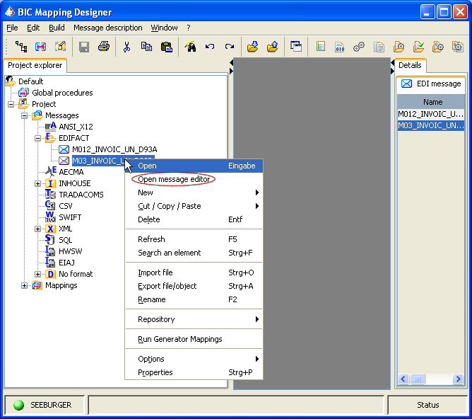
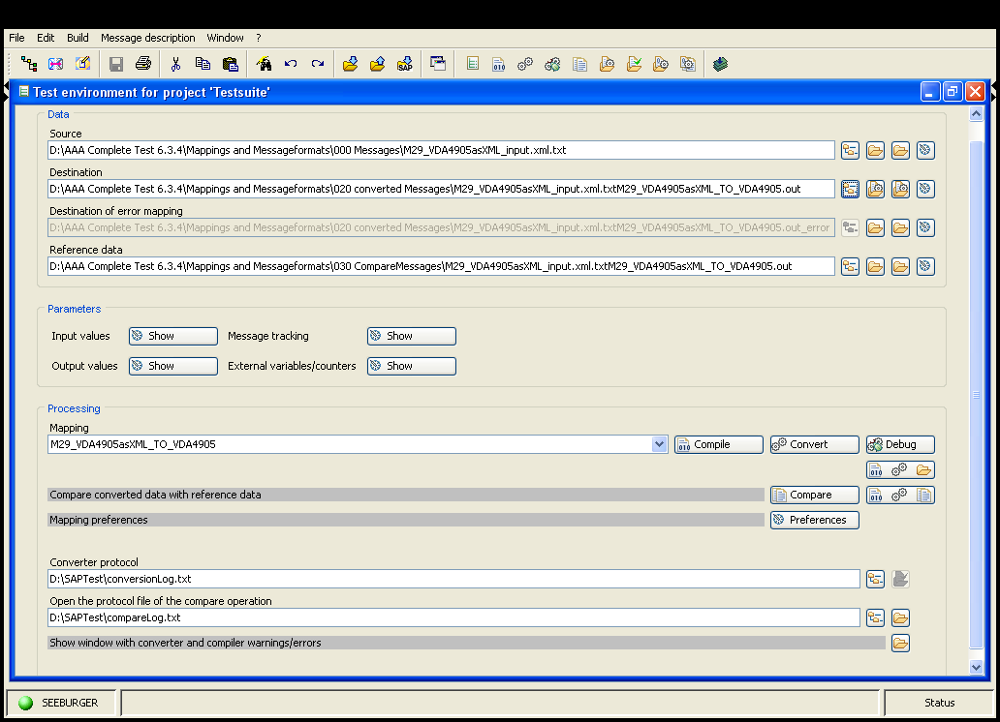

Previous
Previous  Table of Contents
Table of Contents 

BIC MD GUI - Test environment
|
|

Since 6.3.5Q4 it's possible to test 2 Mappings in a row. This function may be helpful to test a process Mapping together with a precompiled Partner Mapping (SEEBURGER Standard Mapping).
Since 6.3.5Q4 it's possible to convert and compare a folder with multiple files.
The combo boxes in the allow it to select two mappings. So it is possible to work (test) two mappings in a row. Accordingly, two tabs are provided for the data and parameter section.
The operations, which are possible in the Test Environment, process always all selected mappings in row - e. g. if the Compile button is pressed and two mappings are selected, the first and second mapping are compiled one after another.
Each operation attempts always to work on all selected mappings. Missing or erroneous data may however have the effect that only one (or none) of the two selected mappings are processed.
The BIC Mapping Designer presents mappings as nodes in the Project View. Selecting them there selects automatically in an opened Test Environment a Mappings Configuration in the belonging combo box on the .
The selected Mappings Configuration is
- using the selected mapping in the project view as first mapping
- the last used one which fits.
This (initial) combo box selection can be changed into any other selection.
The combo boxes contain the names of all the mappings in the currently selected project. A project change through a selection change in the Project View is updating the mapping names accordingly.
Mappings may be available as JCN files. In this case they don't appear in the Project View, instead they are located in a predefined folder structure below src/jcn:
{kind=link}
The names of those JCN files appear in the mapping combo boxes in the as well.
It is possible to work with JCN files in the Test Environment as with ordinary mappings, except that the editing of the belonging mapping source code is impossible.
Because of their project independent nature, mapping JCN files - if found in the corresponding folder - are always contained as mapping combo box entries independently of any Project View selection.
The names of those JCN files appear in the Compile JCN Mappings Dialogue (invoked through the last toolbar icon) as objects which can be selected for a compilation. This dialogue makes it is possible to compile all JCN files into the test or production system.
The JCN folder needs to be filled manually via physical file system.
An alternative way to generate the requested folder structure is to invoke the BIC Mapping Designer Delivery functionality. The generated folder structure in the delivery destination folder can then be copied 1:1 into the src/jcn folder.
The compilation of mappings (or mappings provided through JCN files) is triggered through the corresponding buttons
- on the toolbar
- in the test environment (eventually used in a mapping configuration)
- deliver mappings dialogue
- compile JCN mappings dialogue - in principle the same dialogue as the deliver mappings dialogue, but only those mappings are presented which are based on all found mapping JCN files.
The deliver mappings respectively JCN mappings dialogue has the advantage that all mappings can be compiled in one step.
Once compiled, the mappings are available as java- and class files in the test- or production system.
The converter will process the generated class files during a conversion. Its class path settings determine how message formats, codelist files and mapfiles are found. Typically - for operation within the Test Environment - the src folder is assumed to be the root for them.
However, in case of a conversion with mappings which are provided through JCN files, the src/jcn folder will contain its own set of project folders, codelists and mapfiles (see illustration before) which is then respected.
Critical mixed cases are possible when a mapping from a BIC Mapping Designer project is invoking a child mapping which is based on a provided JCN file. In order to find the message formats for both mappings the converter will evaluate at first the content below src and then below src/jcn . Different message formats but with an identical name may lead here to conflicts. In order to mininize that the src/jcn folder may be excluded from the class path (included as standard).
The Message Editor allows it to visualize and to edit the structure of message (-data). The terms message and message format must be separated from each other; one of the main features of the BIC Mapping Designer is to show and to modify the structure of a valid message format, but the Message Editor is especially tailored to treat finally the messages which have to fit to those message formats.
Aside from visualization, the possibility to modify or create a message is the main benefit of the Message Editor. Every change is checked against the corresponding message format so that only valid messages may be assembled.
The Message Editor can be called through a right click on a message format node. This will open the context menu, where the entry Open message editor should be selected.
|  |
| BIC Mapping Designer |
{kind=link}
This will open a File chooser, which allows to select a message anywhere in the file system. A message and a message format are necessary together to start the Message Editor.
A Configuration dialog is opened after the File chooser, in the most cases, you only have to confirm the preselected standard assumptions in it. Detailed settings can be made in regard to how messages are read into the memory and written out onto the file system. Please refer to the section .
The second possibility to start the Message Editor is through a selected mapping in the Test Environment. Input-, output- and reference files are messages, and have fit to the source and destination message format of this mapping. The right outer button besides each text field containing the message file name and path on the file system allows here further the .
|  |
| Test environment |
{kind=link}
All buttons to open the message (files) can be configured so that favorite editors are associated with them. Usually the Message Editor will be opened with the second button - right of the file browser - and the third button (for an alternative editor) is associated with a more simple editor, e. g. Notepad, to enable also a quick view on the plain file. The link between the buttons and the editors can be configured through the editors preference page.
Nearly all operations which can be done with the Message Editor are started through a right-click on a tree node so that the context menu opens. For details please refer to the topic .